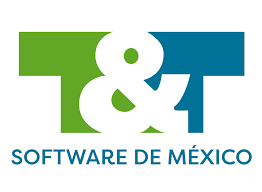
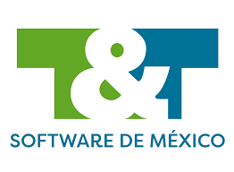
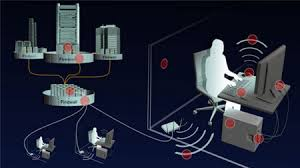

1.2
Reconoce el marco jurídico del derecho informático relativo al software y al equipo de cómputo, conforme a las leyes, normas y principios de la legislación informática en México
Piratería y falsificación de software.
La "piratería de usuario final" se refiere a la práctica ilegal de reproducir, distribuir o utilizar software, música, películas, videojuegos u otros materiales protegidos por derechos de autor sin el permiso adecuado del propietario de los derechos.
Uso excesivo del servidor por parte del cliente.
El "uso excesivo del servidor por parte del cliente" se define como la situación en la que un cliente, que puede ser un usuario, una aplicación o un servicio, consume una cantidad desmedida de recursos disponibles en un servidor. Este uso desproporcionado puede perjudicar la capacidad del servidor para atender otras solicitudes y, en consecuencia, afectar el rendimiento general y la disponibilidad del servicio para todos los usuarios conectados.
Piratería de Internet.
La "piratería de Internet" se define como la práctica ilegal de reproducir, distribuir o utilizar contenido protegido por derechos de autor a través de la red sin la debida autorización de los titulares de los derechos. Este fenómeno abarca una amplia gama de actividades que infringen las leyes de propiedad intelectual, y su impacto es significativo tanto a nivel legal como económico.
Carga de disco duro.
La "carga de disco duro" se refiere al proceso mediante el cual se almacenan y recuperan datos en un disco duro, que es un dispositivo de almacenamiento magnético utilizado en computadoras y otros dispositivos electrónicos. Este proceso implica la lectura y escritura de datos, así como la gestión del espacio disponible para garantizar un funcionamiento eficiente del sistema.
Falsificación de software.
La "falsificación de software" se refiere a la práctica ilegal y no ética de crear, distribuir o utilizar versiones no autorizadas de programas informáticos que imitan o replican software legítimo. Esta actividad puede incluir una variedad de acciones que infringen los derechos de autor y las leyes de propiedad intelectual, y tiene implicaciones significativas tanto para los creadores de software como para los usuarios.
Legislación y normativa de software en México.
La "legislación y normativa de software en México" se refiere al conjunto de leyes, regulaciones y políticas que rigen la creación, distribución y uso de software en el país. Estas normativas están diseñadas para proteger los derechos de propiedad intelectual, fomentar la innovación y garantizar el cumplimiento de buenas prácticas en la industria del software.
Policía cibernética mexicana.
La "Policía Cibernética Mexicana" es una unidad especializada que forma parte de las instituciones de seguridad pública en México, actualmente bajo la Guardia Nacional, destinada a combatir y prevenir los delitos que se cometen en el entorno digital. Esta fuerza fue creada en respuesta a la creciente complejidad y expansión de los delitos informáticos, que representan un desafío significativo para las autoridades y la seguridad de los ciudadanos en el país. La proliferación de internet y las tecnologías digitales ha transformado la forma en que las personas interactúan, hacen negocios y se comunican.
 

Ley Federal de derechos de autor Capitulo IV.
Artículo 101 al 106
- Artículo 101: Este artículo establece la estructura y competencia de los tribunales de la Federación. La justicia federal se imparte por la Suprema Corte de Justicia de la Nación, los Tribunales Colegiados de Circuito, los Tribunales Unitarios de Circuito y los Juzgados de Distrito. La Suprema Corte es el máximo órgano judicial del país y tiene la autoridad para resolver controversias sobre la interpretación de la Constitución y la legislación federal.
- Artículo 102: Este artículo se centra en la independencia del Poder Judicial y los principios de imparcialidad y objetividad que deben regir su actuación. El artículo aboga por la creación de mecanismos que garanticen la autonomía de los jueces y su inamovilidad, lo que significa que no pueden ser destituidos o suspendidos sin un debido proceso. Este artículo también establece que los magistrados y jueces deben estar capacitados y ser idóneos para el ejercicio de su función, así como la obligación de rendir cuentas y actuar con transparencia.
- Artículo 103: El artículo 103 establece las reglas sobre la jurisdicción y competencia de los tribunales de la Federación en relación con los casos que pueden ser objeto de juicio. Determina que los tribunales federales pueden conocer de los asuntos que impliquen la interpretación de la Constitución, de las leyes federales, de tratados internacionales de los que México sea parte, así como de los juicios de amparo. También menciona que los tribunales deben seguir un proceso adecuado para garantizar el derecho a la defensa y el debido proceso legal en todas las acciones judiciales.
- Artículo 104: Este artículo se refiere a la jurisdicción de los tribunales estatales en relación con los casos que no son de competencia federal. Establece que las disposiciones que regulan la materia penal y civil, así como las que tengan que ver con la administración de la justicia, deben ser gestionadas por los tribunales de los estados. Esto implica un equilibrio entre el poder judicial federal y estatal, asegurando que se respeten los derechos y libertades garantizados por la Constitución
- Artículo 105: El artículo 105 aborda el juicio de amparo, que es una herramienta fundamental de protección de derechos humanos en México. Establece que el juicio de amparo tiene como finalidad proteger a las personas contra actos de autoridad que violen sus derechos fundamentales. Este juicio puede ser promovido en contra de leyes, actos de autoridad o resoluciones judiciales que sean contrarias a derechos humanos establecidos en la Constitución.
- Artículo 106: Finalmente, este artículo se centra en la naturaleza del juicio de amparo y la procedencia de los recursos legales. Establece que el juicio de amparo será procedente no solo para organismos públicos, sino también para personas físicas y morales, lo que amplía el alcance de protección del mismo. Además, define los plazos y procedimientos que deben seguirse para la promoción y resolución de los juicios de amparo, garantizando así la correcta administración de justicia.
Articulo 111 al 113
- Artículo 111: Este artículo establece las reglas sobre la procedencia del juicio de amparo en relación con actos de autoridad. El artículo indica que el juicio de amparo es procedente en contra de sentencias definitivas, laudos y resoluciones que emitan las autoridades judiciales, administrativas o legislativas. Además, el índice sobre la naturaleza y ámbito de aplicación del juicio de amparo incluye no solo a las personas físicas, sino también a las personas morales, lo que significa que tanto individuos como organizaciones tienen derecho a interponer este recurso.
- Artículo 112: Este artículo se centra en los procedimientos y reglas que rigen la tramitación del juicio de amparo. Establece que el juicio de amparo debe seguir un proceso específico y debe realizarse ante los tribunales competentes. Una de las características importantes de este artículo es que define los plazos y etapas del juicio, garantizando que las partes involucradas tengan la oportunidad de presentar sus argumentos y pruebas.
- Artículo 113: Este artículo aborda la figura del juicio de amparo en el contexto de la competencia de los tribunales. Establece que los juicios de amparo deben ser decididos por los tribunales que tengan jurisdicción sobre la materia en cuestión. Este artículo también menciona la posibilidad de que, en ciertos casos, se pueda recurrir a otras instancias judiciales para resolver problemas relacionados con el juicio de amparo. Además, se permite la creación de normas que faciliten el acceso al juicio de amparo, especialmente en casos donde se pueda considerar que hay un riesgo para los derechos humanos.
Acceso no autorizado a sistemas de información
Sabotaje informático.
El sabotaje informático puede ser entendido como un tipo de ciberdelito, que abarca una variedad de actos maliciosos dirigidos a dañar la infraestructura tecnológica. Este tipo de sabotaje se manifiesta a través de técnicas que pueden incluir, pero no se limitan a, la implantación de malware, el uso de ransomware, ataques de denegación de servicio (DoS), la alteración de datos, la eliminación de información crítica, o el acceso no autorizado a sistemas informáticos con la intención de dañar.
Fraude informático.
El fraude informático es un delito que implica el uso de tecnologías de la información y comunicación para llevar a cabo actividades ilícitas con el fin de obtener beneficios económicos, financieros o materiales de manera engañosa. Este tipo de fraude ha crecido de manera exponencial con el avance de la tecnología, la digitalización de servicios y la creciente dependencia de las transacciones en línea. Se manifiesta en una variedad de formas y puede afectar tanto a individuos como a organizaciones, generando pérdidas significativas y repercusiones legales
Espionaje Informático o fuga de datos.
El espionaje informático implica la recopilación y extracción no autorizada de información a través de medios digitales, como sistemas informáticos, redes y bases de datos. Los objetivos de este tipo de actividad pueden incluir secretos comerciales, información de clientes, datos gubernamentales, propiedad intelectual y cualquier otro tipo de documento que se considere valioso o estratégico.
Herramientas de software comúnmente utilizadas.
Las herramientas de software utilizadas en la seguridad informática son aplicaciones y sistemas diseñados para proteger los datos, la infraestructura tecnológica, y la privacidad de individuos y organizaciones contra amenazas cibernéticas, fraudes y violaciones de datos. Estas herramientas abarcan una amplia gama de funcionalidades, desde la detención y eliminación de malware hasta la gestión de contraseñas y la protección de datos sensibles. Son fundamentales para establecer una defensa robusta y proactiva en un entorno digital que enfrenta amenazas en constante evolución.

© 2025 Aplicación de la Normatividad Informática